Maxwell’s Equations¶
The Maxwell’s equations are:
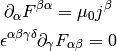
and the Lorentz force is:
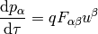
where:
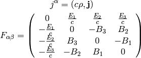
This corresponds to:
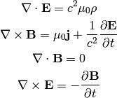
Four Potential¶
The four potential is defined by:
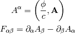
this corresponds to:
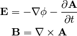
The Maxwell’s equations can then be written as (note that the two eq. without sources are automatically satisfied by the four potential):
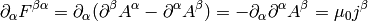
where we have employed the Lorentz gauge 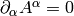.
Semiconductor Device Physics¶
In general, the task is to find the five quantities:
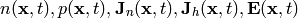
where  (
( ) is the electron (hole) concentration, 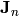
(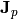) is the electron (hole) current density,
) is the electron (hole) concentration, 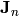
(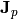) is the electron (hole) current density,  is the
electric field.
is the
electric field.
And we have five equations that relate them. We start with the continuity equation:
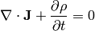
where the current density is composed of electron and hole current densities:
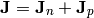
and the charge density  is composed of mobile (electrons and holes) and
fixed charges (ionized donors and acceptors):
is composed of mobile (electrons and holes) and
fixed charges (ionized donors and acceptors):
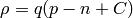
where and is the electron and hole concetration,  is the net
doping concetration (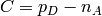 where 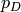 is the concentration of ionized
donors, charged positive, and 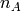 is the concentration of ionized acceptors,
charged negative) and
is the net
doping concetration (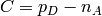 where 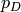 is the concentration of ionized
donors, charged positive, and 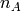 is the concentration of ionized acceptors,
charged negative) and  is the electron charge (positive). We get:
is the electron charge (positive). We get:
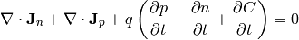
Assuming the fixed charges are time invariant, we get:
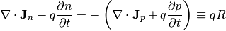
where  is the net recombination rate for electrons and holes (a positive
value means recombination, a negative value generation of carriers). We get the
carrier continuity equations:
is the net recombination rate for electrons and holes (a positive
value means recombination, a negative value generation of carriers). We get the
carrier continuity equations:
(1)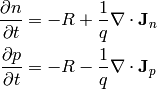
Then we need material relations that express how the current is
generated using and and . A drift-diffusion model is to assume
a drift current (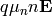) and a diffusion (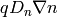),
which gives:
(2)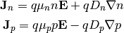
where 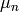, 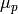, 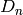, 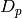 are the carrier mobilities and diffusivities.
Final equation is the Gauss’s law:
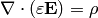
(3)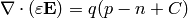
Equations¶
Combining (2) and (1) we get the following three
equations for three unknowns , and :
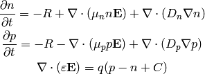
And it is usually assumed that the magnetic field is time independent, so
 and we get:
and we get:
(4)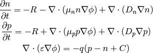
These are three nonlinear (due to the terms 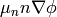 and
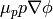) equations for three unknown functions , and  .
.
Example 1¶
We can substract the first two equations and we get:
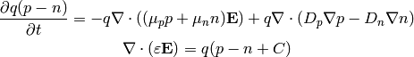
and using 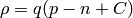 and 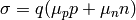, we get:
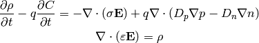
So far we didn’t make any assumptions. Most of the times the net doping
concetration is time independent, which gives:
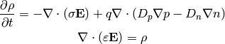
Assuming further  , we just get the equation of
continuity and the Gauss law:
, we just get the equation of
continuity and the Gauss law:
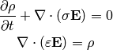
Finally, assuming also that that doesn’t depend on
time, we get:
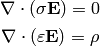
Example 2¶
As a simple model, assume , , , and  are position independent and , 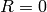:
are position independent and , 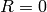:
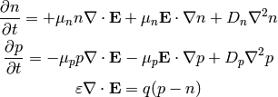
Using 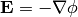 we get:
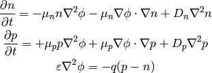
Example 3¶
Let’s calculate the 1D pn-junction. We take the equations (4) and write them in 1D for the stationary state (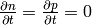):
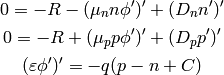
We expand the derivatives and assume that  and
and  is constant:
is constant:
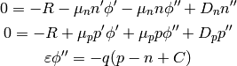
and we put the second derivatives on the left hand side:
(5)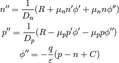
now we introduce the variables 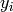:
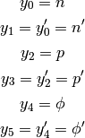
and rewrite (5):
So we are solving the following six nonlinear first order ODE:
(6)